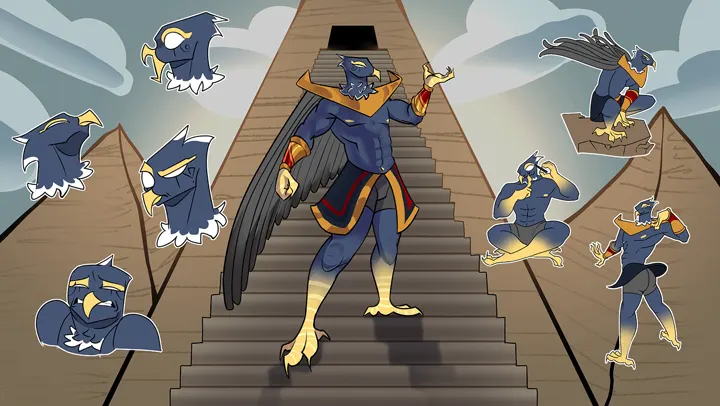
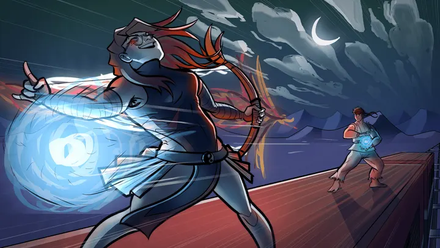

Karakter ve sahne çizimleri
Behance'te paylaştığım dört çizim projesi. Türe göre süzebilir ya da ada, araca göre arayabilirsin.
Proje listesi
4 proje gösteriliyor
-

Horus karakter tasarımı
Mısır tanrısı Horus'un çizgi film karakteri olarak yeniden tasarımı: ana poz, ifadeler ve beş renk denemesi.
Ne öğrendim: Aynı karakteri beş renk düzeninde denemenin, uzaktan okunan rengi bulmayı hızlandırdığını.
-

Gece dövüşü kompozisyonu
Hilal altında, bir çatıda geçen dövüş sahnesi. Sahnenin tek ışığı mavi enerji topundan geliyor.
Ne öğrendim: Tek bir ışık kaynağının bakışı sahnede nereye götürdüğünü.
-

Film sahneleri için renk panoları
Bir orman yolu ve bir çöl gölü için hazırladığım iki renk ve ışık panosu.
Ne öğrendim: Paleti çizime başlamadan sabitlemenin sonraki kareleri tutarlı tuttuğunu.
-

Özgün karakter tasarımı
Kişisel bir proje için tasarladığım yeşil tenli savaşçı: yakın portre ve tam boy çizim.
Ne öğrendim: Portre ve tam boy çizimde karakteri tutarlı tutmak için ayrıntıları baştan belirlemeyi.
Aramana uyan proje yok. Başka bir kelime dene ya da tüm projelere dön.